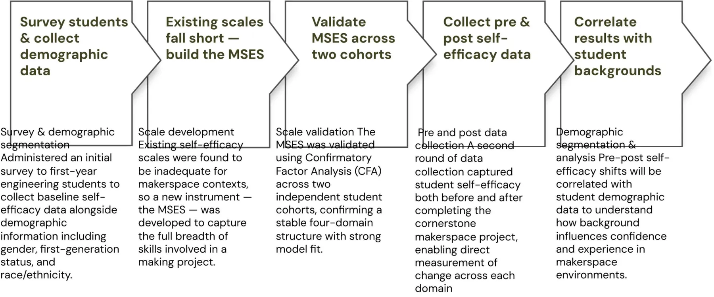

Understanding how demographics affect experiences.
The existing instruments weren't measuring the right thing.
Makerspaces build more than technical skills. They foster confidence, engineering identity and belonging. But existing self-efficacy scales (SEED, EMSE, ISE, CESES) were designed for broad engineering contexts and don't capture the full process of making.
A context-specific instrument was needed to measure student confidence across each phase of a makerspace project. The MSES is used to analyse self-efficacy before and after a makerspace activity, and those measurements are correlated with demographic data (gender, first-generation status, race/ethnicity) to understand how background shapes the experience.
- How confident do students feel across each phase of making?
- How does that confidence change after a hands-on makerspace project?
- How do students' backgrounds relate to their confidence and experience?
Five phases, from survey to correlation.

Presented to two research communities.


Self-efficacy is “does the user feel capable?”, measured properly.
Build the right instrument.
When off-the-shelf measures don't fit the context, you design one and validate it (here with CFA across two cohorts).
Segment before you generalise.
Averages hide the people a product quietly excludes. Demographic segmentation makes them visible.
Measure change, not snapshots.
Pre/post designs show whether an experience actually moved the needle. It's the same logic as a before/after usability benchmark.
Understanding users' backgrounds and lived experiences is foundational to designing inclusive and effective systems.CERS 2026 · research talk
Where this goes next.
With the scale validated and pre/post data collected, the next step is the correlation analysis, then pairing the numbers with qualitative interviews to understand why certain groups gain (or lose) confidence, so the findings turn into concrete changes to makerspace onboarding and support.
DFAM →